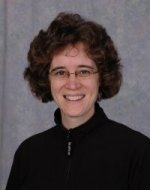

Our Staff
Betty Adler
Piano, Woodwinds
Betty has served as church musician in Brownwood for the last 18 years, working as principal organist and pianist and as choir and instrumental ensemble director. She received a Bachelor of Music degree from Southern State University in Texas with majors in music education, clarinet and organ. In addition, she is has experience teaching preschool and elementary music classes.
Betty has made Brownwood her home. The rich musical opportunities and high regard for the arts present in this community are great motivators. Betty is an active member of the American Guild of Organists - Association of Church Musicians, Early Childhood Music, and the Texas Piano Teachers Association.
David Spahn
Guitar, Keyboards, Composition
David Spahn started playing music at age 15 on a piano that came into the household after his family moved to Texas. David was fascinated with the instrument and soon immersed himself in music. He always had an interest in popular music and jazz, and taught himself to play the guitar from the music theory he learned at his piano lessons.
David attended East Texas State as a music major, where he studied theory and composition with acclaimed composer William Turk. He also played and toured with the East Texas State Jazz Ensemble. David has continued to play and write music for a wide variety of styles, ranging from contemporary Christian music to jazz fusion. He moved back to Brownwood last year, and when not teaching for Young Notes, he plays keyboard and guitar for the musical group Southern Cross.

Joan Harris
Voice, Choir, Piano
Joan is a new Brownwood resident and is excited to live in such a wonderful town! She is a graduate of Upton Academy in Decatur, Illinois, with a Bachelor of Music in music education. Joan is an active participant in numerous choirs and ensembles, including the Texas Concert Choir, Tudor Voices, and Southland Choir. She has performed at the National Cathedral in Washington, D.C. and at the American Choir Directors National Convention in Miami, FL. She has performed works from Gluck, Landini, Palestrina, and Gastoldi.
In addition to singing, Joan has studied the piano since age 7. She received piano instruction at college and is one of our most popular instructors at Young Notes.
Jeff Thomson
Violin, Viola
Jeff graduated from Arkansas State with a B.A. in music (violin) and a minor in arts management. He grew up in Kansas and was home schooled through high school. After moving to Arkansas he began studies with Walter West, and in college studied under Laureen Unger.
At Galveston University, Jeff taught lessons for the GU String Academy and coached chamber music camps for high school students. During past summers, he has worked as a concert manager at the Colorado Youth Summer Seminars. His areas of focus in teaching include practice techniques and ear training. When not teaching at Young Notes, Jeff enjoys rafting, hiking, and exploring new cultures.
We take great pride in our teachers here at Young Notes. Each one is an accomplished musician in his or her own right, and a great teacher too! Most of our faculty are basic level tuition teachers. Faculty teaching at the master level is also available. Read their biographies in the box at the right.
We take great pride in our teachers here at Young Notes. Each one is an accomplished musician in his or her own right, and a great teacher too! Most of our faculty are basic level tuition teachers. Faculty teaching at the master level is also available. Read their biographies in the box at the right.
Don't be a stranger! Prospective students and their parents are always welcome to join us for one-on-one interviews and a free "get to know you" session of instruction. Contact the school for more details.